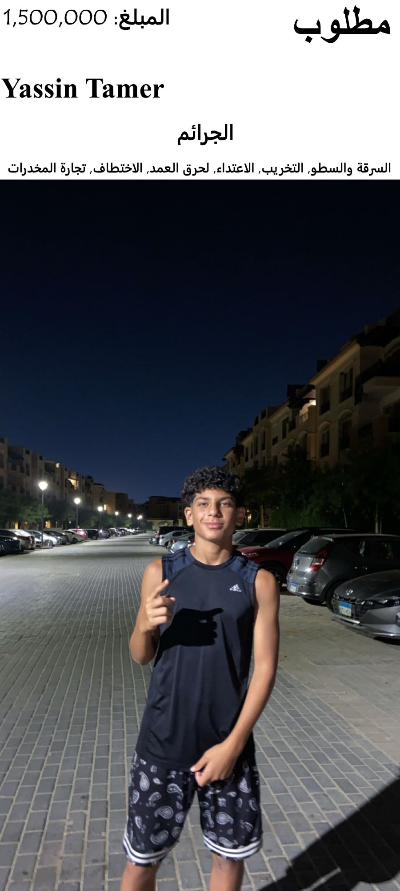

ملصق المطلوبين
ياسين تامر مطلوب لارتكابه جرائم خطيرة متعددة. إذا كان لديك أي معلومات بشأن مكانه، يرجى الاتصال على الفور بشرطة القاهرة.
الملف الشخصي
الاسم: ياسين تامر
العمر: 15
الجنس: ذكر
الموقع: القاهرة، مصر
القصة الخلفية
ولد ياسين تامر في أسرة مضطربة في القاهرة. منذ سن مبكرة، تعرض لواقع الحياة القاسي في الشوارع. بغياب والديه وافتقاره إلى قدوة إيجابية، انخرط ياسين بسرعة في حياة الجريمة. بحلول سن العاشرة، كان قد تورط بالفعل في السرقات الصغيرة والتخريب، ولكن سرعان ما تصاعدت أنشطته الإجرامية.
مع تقدمه في السن، أصبحت جرائم ياسين أكثر شدة وتخطيطًا. جعلت ذكائه ودهائه منه شخصية مهيبة في عالم الجريمة بالقاهرة. على الرغم من صغر سنه، أظهر ياسين عدم الندم على أفعاله، مما أكسبه لقب أحد أخطر الأفراد في المدينة.
الجرائم
- السرقة والسطو: تم ربط ياسين بالعديد من عمليات السطو في جميع أنحاء القاهرة، مستهدفًا المنازل والشركات ذات القيمة العالية. جعلت خبرته في تجاوز أنظمة الأمان منه شخصية سيئة السمعة بين أجهزة إنفاذ القانون المحلية.
- التخريب: لم تقتصر أعماله التخريبية على الجرافيتي فقط، بل شملت تدمير الممتلكات العامة والخاصة. يفتخر ياسين بالفوضى التي يتركها خلفه، وغالبًا ما يستهدف المعالم الثقافية والتاريخية.
- الاعتداء: معروف بطباعه العنيفة، تورط ياسين في العديد من الاعتداءات، مما ترك ضحاياه بإصابات خطيرة. لا يعرف حدودًا لوحشيته، وقد هاجم منافسين ومارة أبرياء على حد سواء.
- الحرق العمد: إحدى أكثر جرائم ياسين رعبًا هي الحرق العمد. قام بإشعال النار في عدة مبانٍ، مما تسبب في أضرار كبيرة وتعريض العديد من الأرواح للخطر. غالبًا ما تُستخدم هجماته بالحرق كوسيلة للترهيب وفرض السيطرة على منطقته.
- الاختطاف: تورط ياسين في عدة عمليات اختطاف، مستخدمًا ضحاياه كوسيلة لابتزاز الأموال والخدمات من عائلاتهم. جعلته استراتيجياته الذكية وتنفيذاته الباردة من كبار المتلاعبين.
- تجارة المخدرات: على الرغم من صغر سنه، يشارك ياسين بعمق في تجارة المخدرات. أنشأ اتصالات مع كبار موردي المخدرات وكان مسؤولاً عن توزيع المواد غير القانونية في جميع أنحاء القاهرة.
مكافأة
تقدم شرطة القاهرة مكافأة قدرها 1,500,000 جنيه مصري للمعلومات التي تؤدي إلى القبض على ياسين تامر. تقديرنا الكبير لتعاونكم، وستبقى جميع المعلومات المقدمة سرية.